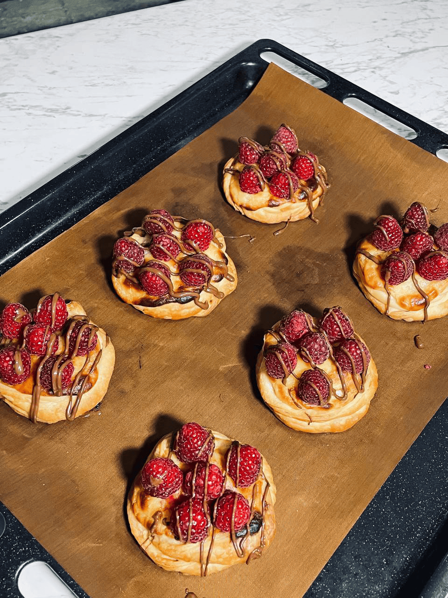
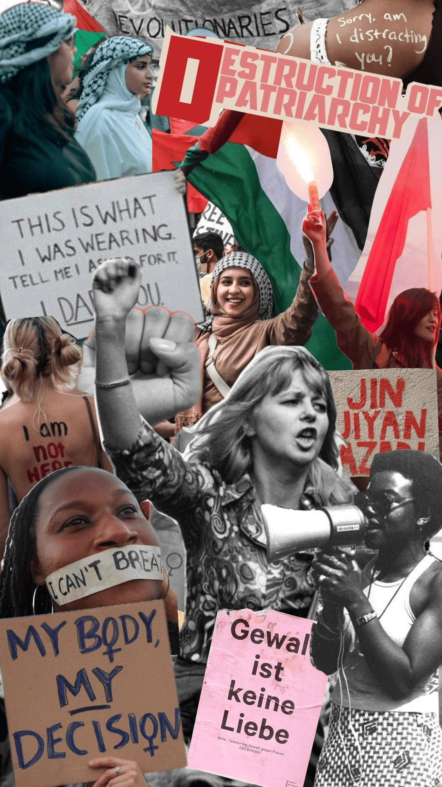
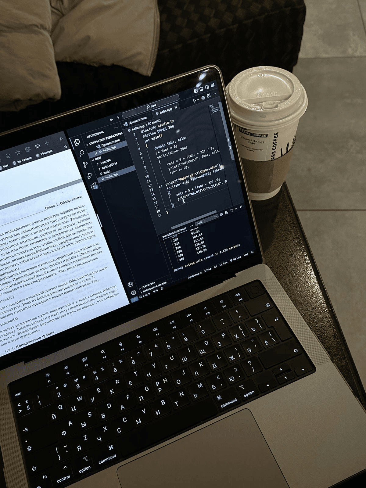
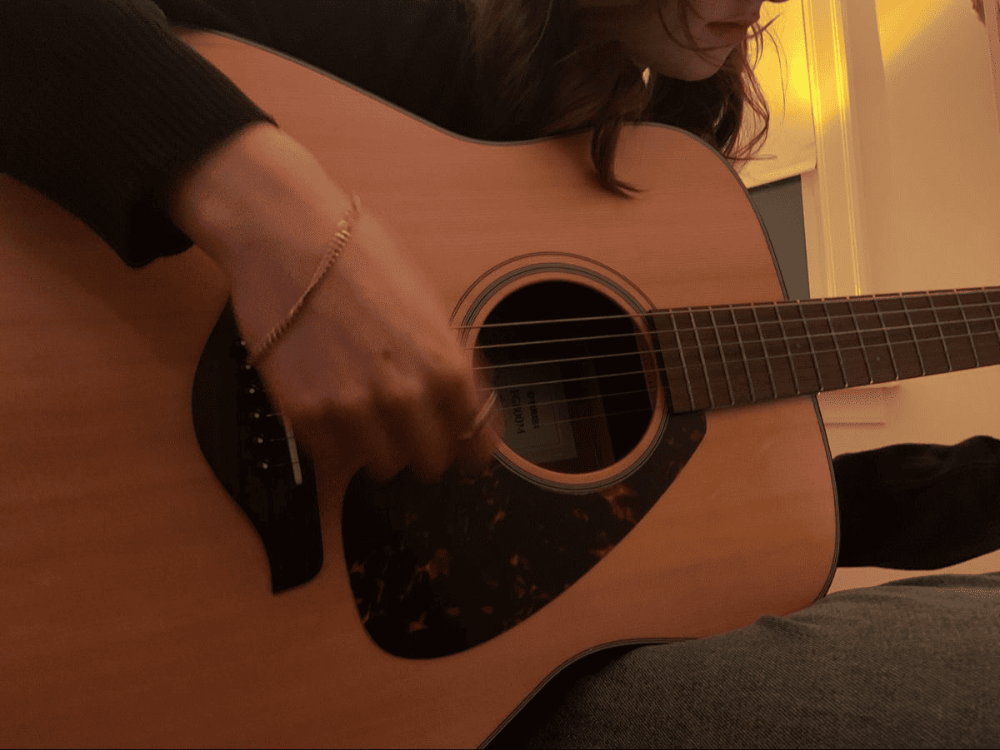

Baking has been a part of my life since I was just 7 years old. My earliest memories are of watching my grandmother knead dough, mix ingredients, and turn simple things into delicious magic. I was fascinated, and soon I was her little helper, eventually becoming the baker myself.
Over the years, I've turned my curiosity into a skill. I taught myself through endless YouTube tutorials and baking blogs, and now I can even make birthday cakes with just a few ingredients and a lot of heart. Baking to me is more than a hobby—it's a way to show love, creativity, and patience all at once.

Growing up in Uzbekistan, I witnessed the gender imbalance that many girls face. I knew it didn't feel right, but it wasn't until 7th grade—when I read my first book on feminism—that my entire world changed. It gave me language, tools, and courage.
Since then, I've written papers on misogyny, volunteered for awareness campaigns, and tried to help women and girls around me feel seen, safe, and heard. I believe feminism isn't just a cause—it's a compass guiding me toward a better future. I dream of a world where girls like me grow up feeling equal, empowered, and unstoppable.

Technology has always sparked a fire in my imagination. From gadgets and robots to apps and AI, I've been endlessly curious about how things work. I would take apart devices as a child just to peek at their secrets. That curiosity only grew stronger with time.
I've read countless books about innovation and scientific breakthroughs. Soon, I'll be joining a robot-building class—a big step toward my dream of being part of the future I admire so much. Technology makes the impossible possible, and I can't wait to be part of that magic.

Music is my comfort zone, my energy boost, and sometimes, my way of communicating what words can't. It connects people beyond language, culture, or borders—like a timeless bridge between souls. I believe every person has their soundtrack, and mine is filled with emotion, rhythm, and meaning.
In 2023, I started learning the guitar. It was tough at first, but I pushed through every sore finger and awkward chord. Now, playing brings me peace and pride. Whether it's strumming a happy tune or singing along in my room, music is the rhythm of my heart and soul.